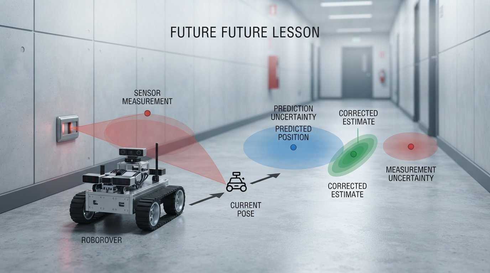

Robots rarely receive a perfect measurement of where they are. They estimate.
This lesson introduces Kalman filter intuition through a simple one-dimensional RoboRover example:
• Predict position from motion and carry uncertainty forward.
• Compare the prediction with a noisy sensor measurement.
• Use the Kalman gain to determine how far the estimate should move.
• Verify the mathematics with a worked example and Python code.
• Experiment with measurement variance to see how trust changes the result.
The lesson also addresses practical failure modes, including sensor bias, incorrect uncertainty settings, delayed measurements, and wheel slip. That matters because filtering is not magic: a precise equation can still produce a poor estimate when its model or assumptions are wrong.
Try the lab, change the measurement variance, and predict the graph before running it. What happens when the motion model becomes wrong halfway through the simulation?
Explore Professor OS: https://connect.vin/professor-os
#Robotics #KalmanFilter #Python #SensorFusion
This lesson introduces Kalman filter intuition through a simple one-dimensional RoboRover example:
• Predict position from motion and carry uncertainty forward.
• Compare the prediction with a noisy sensor measurement.
• Use the Kalman gain to determine how far the estimate should move.
• Verify the mathematics with a worked example and Python code.
• Experiment with measurement variance to see how trust changes the result.
The lesson also addresses practical failure modes, including sensor bias, incorrect uncertainty settings, delayed measurements, and wheel slip. That matters because filtering is not magic: a precise equation can still produce a poor estimate when its model or assumptions are wrong.
Try the lab, change the measurement variance, and predict the graph before running it. What happens when the motion model becomes wrong halfway through the simulation?
Explore Professor OS: https://connect.vin/professor-os
#Robotics #KalmanFilter #Python #SensorFusion

Kalman Filter Intuition: How Robots Combine Motion Models and Sensor Evidence
A practical introduction to Kalman filtering through RoboRover: prediction, uncertainty, correction, a worked calculation, and a runnable Python simulation.